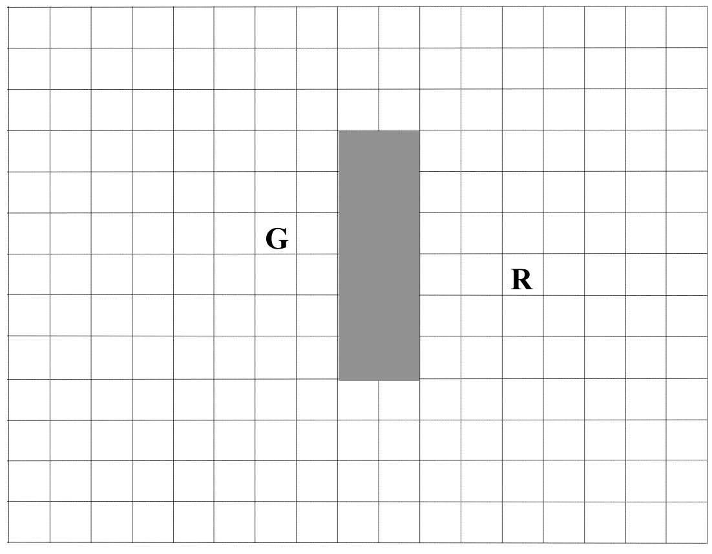
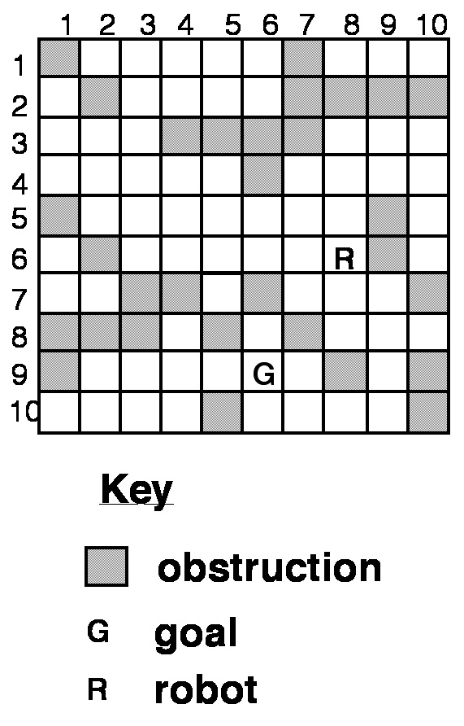

Fill in the squares with their distance back to the robot and the estimated distance to the goal if there was no obstables (use "taxi-cab"/Manhattan distances).

For example, for the first map, we start at the robot, and mark all squares that we can reach by walking one city block from the robot (left image). We then process a node with best estimated distance (we could choose either of those with score 7), and compute the estimated distance for its 3 unvisited neigbors (right image):
We continue the process, of computing the estimated distance for the current best scoring nodes, and repeating until we reach the goal (or have visited the whole space and given up).
